Overview
Foundation models such as GPT-6 Astra can now output robot commands directly. Fine-tuned policies are evaluated on a handful of precise tasks; models like these need many real tasks. EgoSim builds them from videos: every video becomes a simulated scene, tasks grounded in what happens in it, and a validated evaluation. A vision-language model (VLM) decides what things are; geometry, scale and poses come from depth, masks and multi-view voting, so the pipeline runs without per-video tuning.
1 · Observe
2 · Objects & support
3 · Author the room
4 · Task & evaluate
Method
1 · Observe and register
- Plan. The VLM describes the support (type, SAM prompt, outline shape, structure, height prior, sides, periodic print) and the floor from sharp frames spread over the video.
- Reference frame and world. The sharpest frame with few hands; a RANSAC plane on its DA3 points inside the SAM 3 support mask defines z = 0. Every frame is registered to that plane by a homography, so masks from all frames can be voted in one metric map.
- Height and scale. Floor points give the support height; VLM sizes against measured footprints rescale the world when DA3's metric scale is off.
2 · Objects and support
- Inventory. Names, SAM prompts, kind (flat / lathe / generic), size, colour, mass, cloth parameters.
- Locate. SAM 3 masks on all registered frames, warped to the plane and voted: footprint, diameter, height from how far each silhouette reaches away from its camera, rectified top texture.
- Build. Flat → textured slab; lathe → revolved profile; generic → product photo → Hunyuan3D-2.1 mesh scaled to the measurement; garments → particle cloth.
- Verify. Meshes projected into frames vs SAM 3 masks; the VLM returns bounded size corrections.
- Support. Texture fused from every frame where no hand or object covers it, unseen parts continued along the print's lattice; the floor tile comes from the video too.
- Render–critic. The scene is rendered from the video's camera and compared with the real frame: a per-cell colour check of the support (which overrules VLM complaints the video contradicts), a colour gain, and a VLM critic whose findings become fixes (refill, retexture, floor, locate, build) for up to 2 rounds.
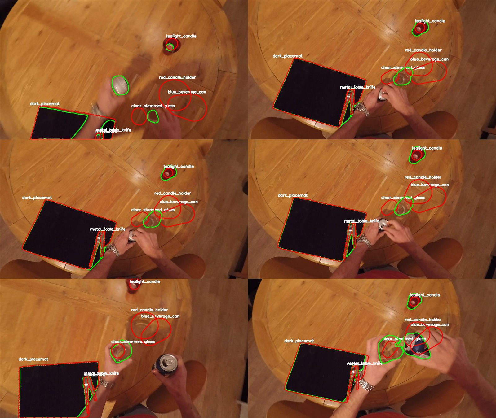
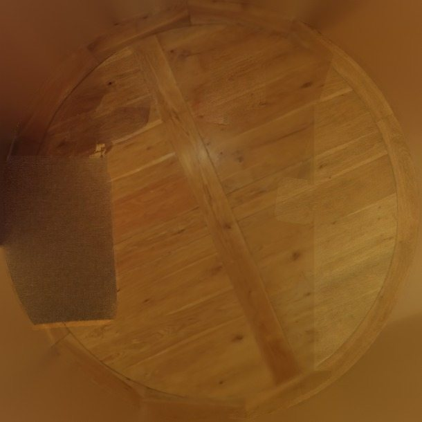
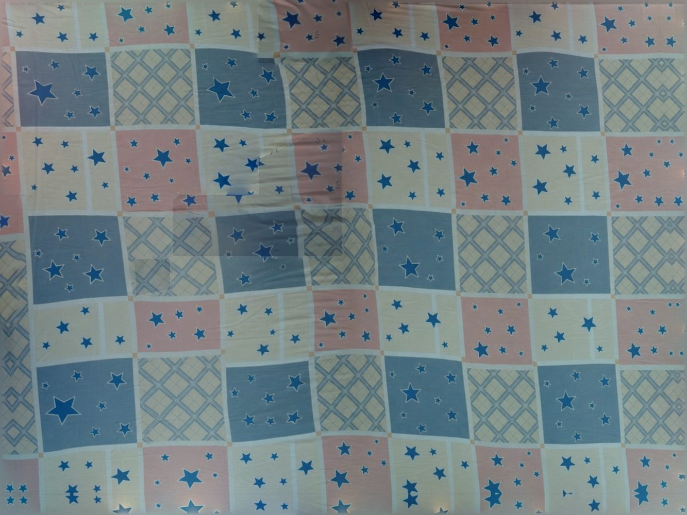
3 · Author the room
Following AHa-3D, but for OmniGibson / Isaac Sim instead of Blender, the scene around the support is authored rather than reconstructed point by point:
- Room. The VLM names the structures around the support; their fused depth gives vertical planes (pooled RANSAC, coplanar merge, Manhattan snap, joined corners), each a wall with a collider.
- Materials. Video-first: the fused support top and floor tile when the video saw enough of them, otherwise procedural presets in the measured colours; no baked lighting.
- Pose fit. Every static object's x, y, yaw and scale fitted to SAM 3 silhouettes in several frames.
- Calibrate. One render-to-video colour gain for all materials.
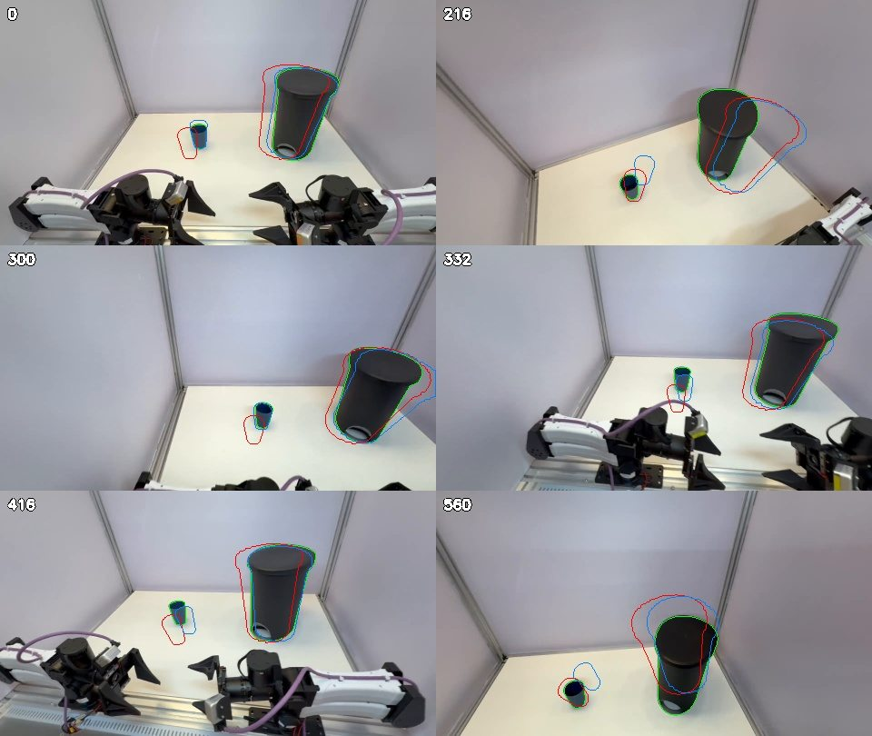
Cloth
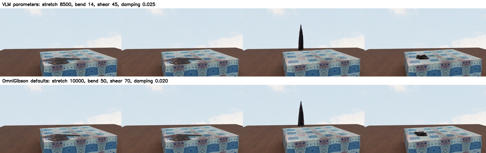
From scene to task
Mine
The VLM watches frames spread over the video: is it a human's egocentric recording, and which manipulation events happen (verb, objects, target, frame span)? Each event is judged simulable (pick, place, push, stack, put into an open container) or not (opening a can, pouring, buttoning).
Propose
Egocentric videos with simulable events give video tasks; robot or third-person footage, or videos with nothing simulable, fall back to tasks the VLM proposes for the scene. Facts the VLM cannot see are supplied: sizes, positions in the robot's table frame, reach, graspability.
Goals
A fixed predicate vocabulary, checked on simulator state:
on_top(a, b) · inside(a, b) · in_region(a, near|far|left|right|corners|center) · near(a, b, d_cm) · upright(a)
near counts the free space between the two objects (edge to edge), as a person reads
"within 9 cm of the can".
| Video | Camera | Mined | Source | Tasks |
|---|---|---|---|---|
| ThrowAwayTrash | robot | no manipulation | proposed | bring the cup forward · cup beside the bin · cup on the bin's lid |
| ego_1 | human egocentric | 7 events, 5 simulable (open can, pour: not) | video | can beside the placemat · glass beside the can · stage can and glass for pouring |
| ego_2 | human egocentric | buttoning a shirt, not simulable | none | only cloth in the scene: cloth tasks are future work |
Physical checks
The initial state must not already satisfy the goal.
A free, reachable goal pose that still holds when shifted 2 cm (a near band of a few cm excepted); objects teleported there and settled by physics must satisfy the goal.
A privileged scripted top-down pick-and-place runs on the task and is reported next to the model. Checks 1–2 decide validity; the expert is not yet a hard gate because its IK cannot reach close to the robot's base.
On ThrowAwayTrash: "within 14 cm of the bin" was rejected at check 2 (only a 12–14 cm ring around a 17 cm bin is left); "the cup on the bin's closed lid" passes all three, with the expert lifting the cup onto the 27 cm lid; "bring the cup forward" passes checks 1–2 while the expert stops 4.4 cm short. A visual judge cannot see any of this.
Closed-loop evaluation
A Franka Panda stands on a pedestal on the operator's side of the table (where the video was filmed from), with an IK controller on absolute end-effector poses and the fingers pointing down. Each call, the model receives three images, the gripper's pose and its recent actions; in state mode also the objects' positions. It answers with up to four actions:
{"reasoning": "...",
"actions": [{"type": "move", "xyz_cm": [x, y, z], "yaw_deg": 90},
{"type": "close"}, {"type": "open"}],
"done": false}
Coordinates are in the table frame (cm): origin at the table centre, x to the robot's right, y away from it, z up. Budget: 20 calls. Stages: 0 nothing · 1 grasped · 2 lifted · 3 over the goal · 4 goal holds after release.
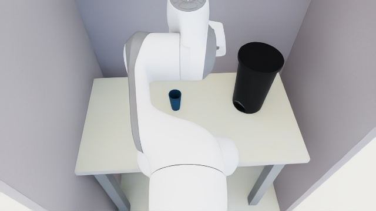
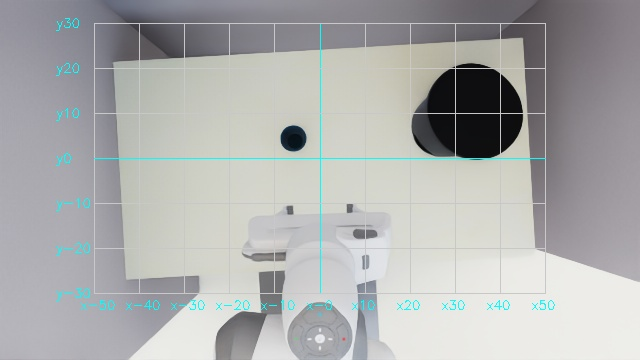
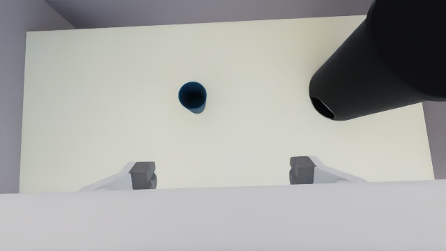
Results
Two tasks of the benchmark (ThrowAwayTrash, proposed, valid), one trial each. Task: "Place the blue cup upright in the far-left area, using a spot within your reach rather than the back corner."
Task: "Carefully stand the blue cup upright on top of the bin's closed lid", a lift onto a 27 cm lid.
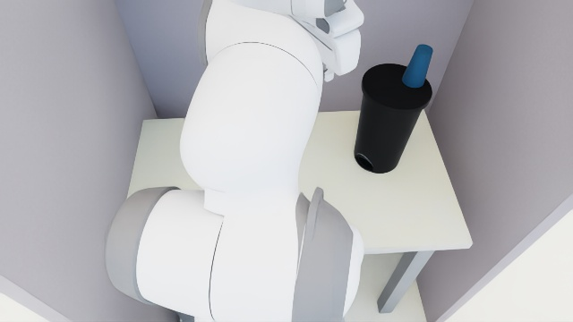
done. The goal check on simulator state does not take the model's word for it.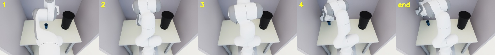
What the physical checks caught
near was checked centre to centre while placement
kept footprints apart, so "the glass within 9 cm of the can" had no feasible pose and every such task was
rejected. Both now use the same footprint gap; the tasks were proposed again.
OmniGibson's cloth grasp flag silently disabled rigid grasps; a 25° gripper tilt came with the robot's reset pose.
A reset that did not restore teleported objects made an early expert run look successful and a stable lid goal look unstable. Rollouts now refuse to start if the goal already holds.
Single trials on one easy task show that the loop works end to end; the success rates are in the benchmark below.
Benchmark
Every scene adds its valid tasks. The scenes come from a robot recording, two head-mounted phone videos and three Aria glasses recordings of industrial work (IndEgo; fisheye frames rectified to a pinhole camera first). Each task is run once by the scripted expert and once by the model in each observation mode; a cell shows success and the stage reached (0–4).
from 12 proposed in 2 scenes
what the person did; the rest proposed for the scene
9 runs, privileged state
9 rollouts
8 rollouts
| # | Video | Task | Source | Expert | State | Vision | |
|---|---|---|---|---|---|---|---|
| 1 | 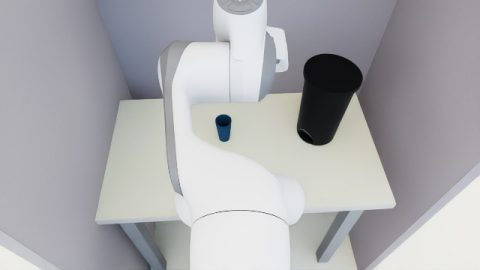 | ThrowAwayTrash | Bring the blue cup to the near side of the table and leave it upright.on_top(blue_cup, support) ∧ in_region(blue_cup, near) ∧ upright(blue_cup) | proposed easy | ✗ 3 | ✗ 3.0 | ✗ 3.0 |
| 2 | ThrowAwayTrash | Set the blue cup upright in the near-left area of the table.on_top(blue_cup, support) ∧ in_region(blue_cup, near_left) ∧ upright(blue_cup) | proposed easy | ✓ 4 | ✓ 4.0 | ✗ 3.0 | |
| 3 | ThrowAwayTrash | Move the blue cup to the near-right area of the table, keeping it upright.on_top(blue_cup, support) ∧ in_region(blue_cup, near_right) ∧ upright(blue_cup) | proposed medium | ✓ 4 | ✓ 4.0 | ✓ 4.0 | |
| 4 | 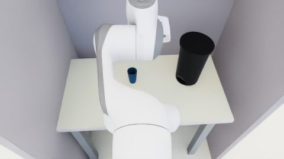 | ThrowAwayTrash | Place the blue cup upright in the far-left area, using a spot within your reach rather than the back corner.on_top(blue_cup, support) ∧ in_region(blue_cup, far_left) ∧ upright(blue_cup) | proposed medium | ✓ 4 | ✓ 4.0 | ✓ 4.0 |
| 5 | 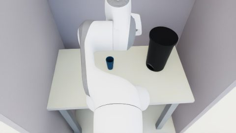 | ThrowAwayTrash | Set the blue cup upright on the table just to the left of the bin, leaving no more than 3 cm between them.on_top(blue_cup, support) ∧ in_region(blue_cup, right) ∧ near(blue_cup, dark_gray_pedal_bin, 3) ∧ upright(blue_cup) | proposed hard | ✓ 4 | ✗ 2.0 | ✗ 2.0 |
| 6 | 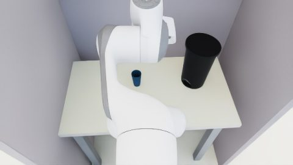 | ThrowAwayTrash | Carefully stand the blue cup upright on top of the bin's closed lid.on_top(blue_cup, dark_gray_pedal_bin) ∧ upright(blue_cup) | proposed hard | ✓ 4 | ✓ 4.0 | ✗ 3.0 |
| 7 | 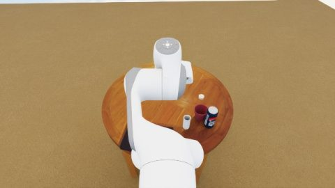 | sample_ego_1 | Bring the blue beverage can closer and set it upright beside the placemat.near(blue_beverage_can, dark_placemat, 2) ∧ upright(blue_beverage_can) | video easy | ✓ 4 | ✗ 2.0 | ✗ 3.0 |
| 8 | 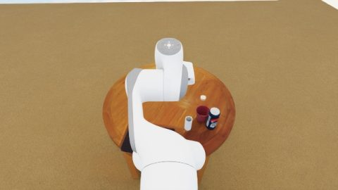 | sample_ego_1 | Move the glass next to the beverage can, leaving no more than two centimeters between them.near(clear_stemmed_glass, blue_beverage_can, 2) ∧ upright(clear_stemmed_glass) | video easy | ✓ 4 | ✓ 4.0 | ✗ 2.0 |
| 9 | sample_ego_1 | Bring the glass onto the placemat and set it upright clear of the cutlery.on_top(clear_stemmed_glass, dark_placemat) ∧ upright(clear_stemmed_glass) | video medium | ✗ 3 | ✓ 4.0 | – |
Every task with its goal predicates, check results and runs: benchmark.json.
EGOSIM_N_TASKS=6 bash egosim/egosim.sh /abs/path/video.mp4 # per video: scene + tasks + evaluation bash egosim/benchmark.sh /abs/path/a.mp4 /abs/path/b.mp4 ... # the table above
Comparison
The same three videos, three systems. SimFoundry: NVIDIA's real-to-sim pipeline, which keeps the surroundings as a Gaussian splat (our runs). EgoSim w/o room: an ablation that stops after stage 2 (objects, support, floor, render–critic fixes) and skips the authored room. EgoSim: the full method. Top row: the video's own camera. Bottom row: a wide view the video never saw, which is what a robot simulator needs.
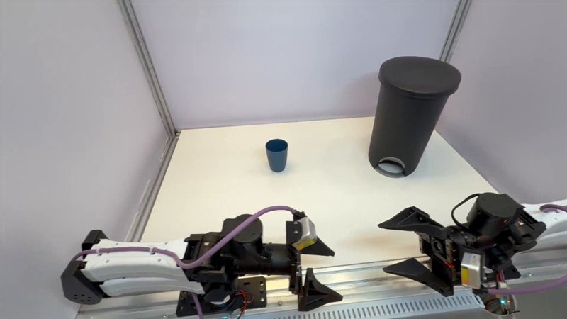
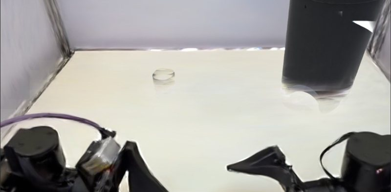
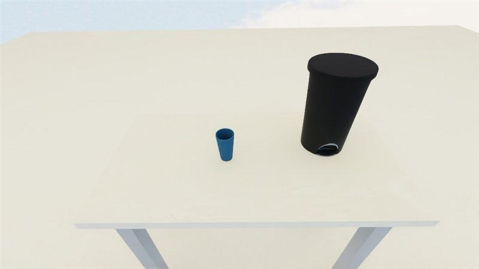
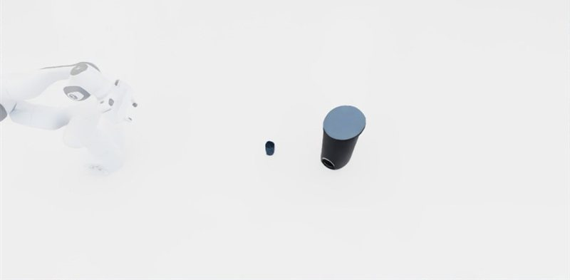
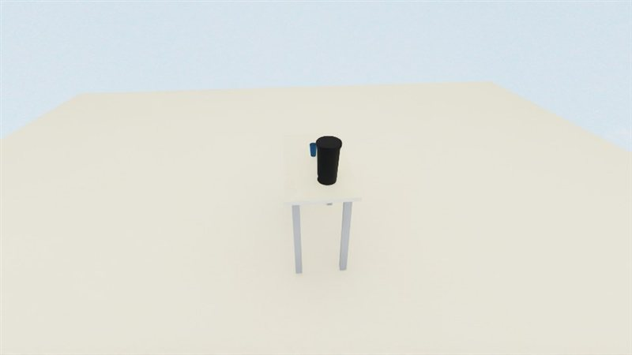
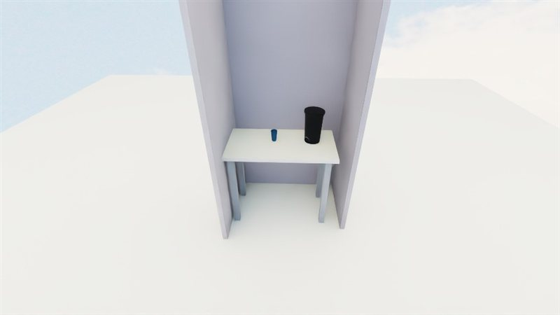
SimFoundry: the splat looks right from the recorded camera, but the cup and bin are translucent and the enclosure has no geometry; its simulated meshes alone (bottom) float in empty space. Without the authored room there is a table and objects but no enclosure; EgoSim rebuilds the enclosure walls. Blind judge: 5 / 10 without the room, 8 / 10 with it.
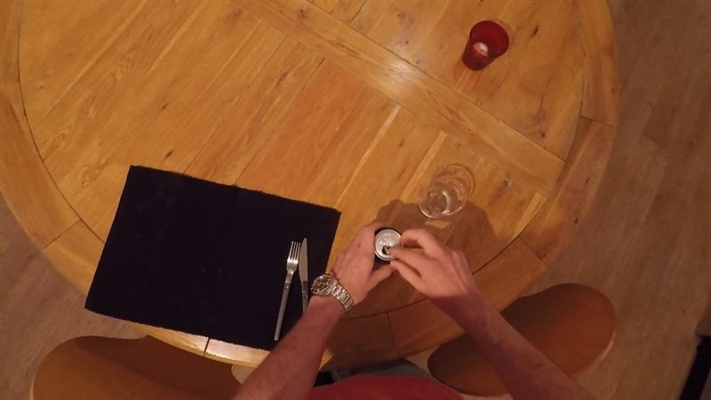
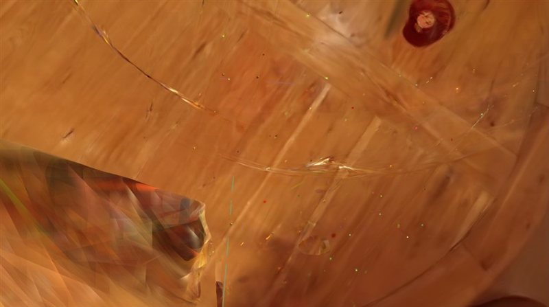
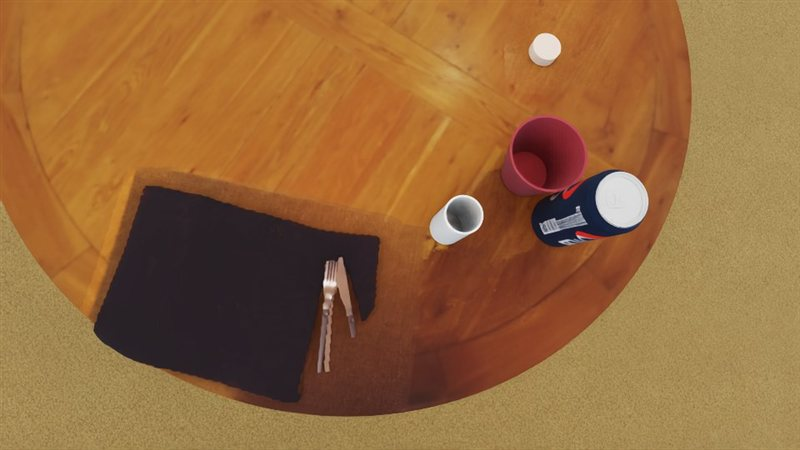
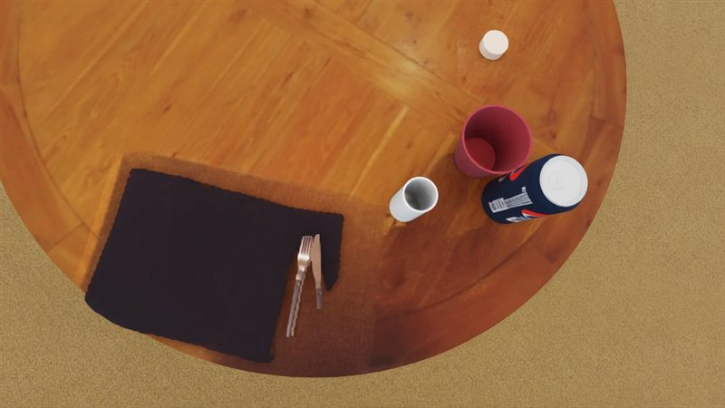
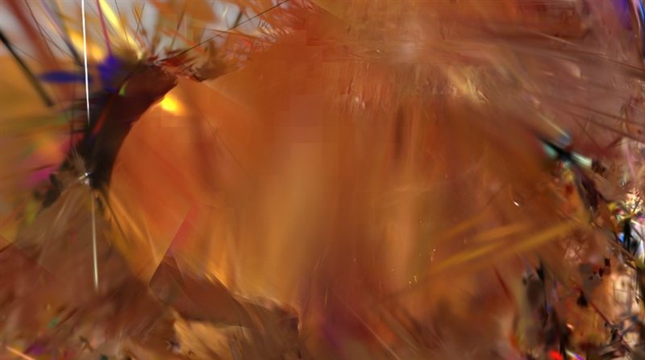
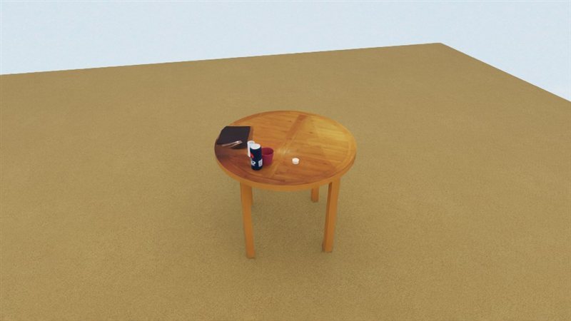
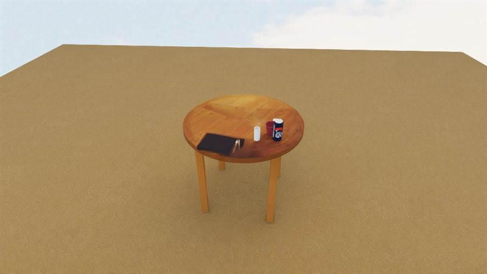
A head-mounted camera moves fast and close: SimFoundry's splat fills with floaters even near the recorded views and breaks apart off them. EgoSim keeps a clean table with every object, with or without the room; the VLM found no structure to author here, and the blind judge ties the two at 4 / 10 (neither models the clear glass as transparent).
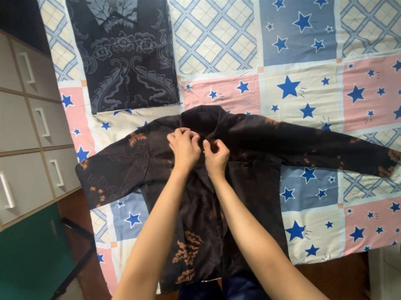
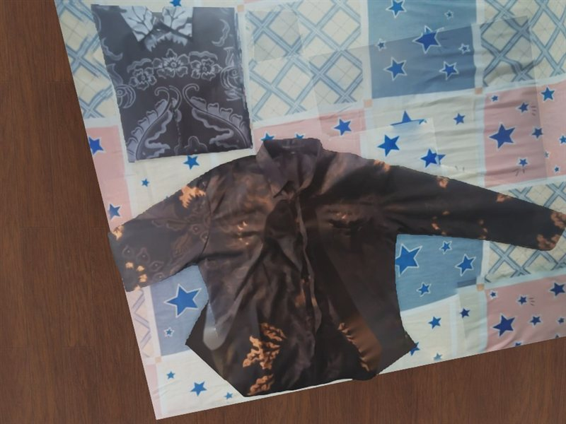
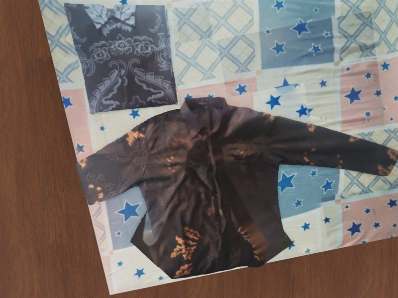
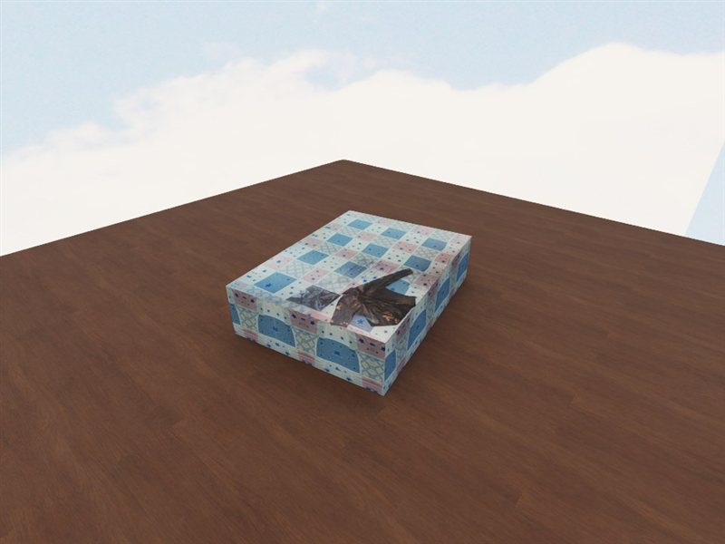
Bed, cover print and shirt (as particle cloth) with or without the room. The VLM names the cabinets beside the bed, but too few depth points land on them to fit a wall, so the authored room adds nothing here and the blind judge ties the two at 6 / 10.
Blind judge (0–10)
GPT-6 Astra sees the real frame and two renders in random order (from the video's camera and a wide view) and scores each against the real frame.
| Scene | System | Layout | Support | Surroundings | Objects | Overall |
|---|---|---|---|---|---|---|
| ThrowAwayTrash | EgoSim w/o room | 6 | 7 | 1 | 8 | 5 |
| EgoSim | 8 | 9 | 8 | 8 | 8 | |
| ego_1 | EgoSim w/o room | 5 | 5 | 2 | 4 | 4 |
| EgoSim | 5 | 5 | 2 | 4 | 4 | |
| ego_2 | EgoSim w/o room | 7 | 7 | 2 | 6 | 6 |
| EgoSim | 7 | 7 | 2 | 6 | 6 |
SimFoundry vs EgoSim, as observed in these runs
| SimFoundry | EgoSim | |
|---|---|---|
| Surroundings | Gaussian splat: looks right near the recorded cameras, no collision geometry | Authored walls, support and floor, all with colliders |
| Away from the recorded views | Floaters and smearing (ego_1) | Geometry and materials hold |
| Fast, close egocentric footage | Splat degrades even at the recorded views (ego_1) | Clean support and objects |
| Output | A simulation scene | A scene, tasks with checked goals, and a closed-loop evaluation |
Reproduce
One NVIDIA RTX PRO 6000 Blackwell (96 GB), SimFoundry 9e34ebe + the patch in
patches/, Python 3.11, PyTorch 2.7, OmniGibson 3.8.0.
git clone https://github.com/NZ-Liam-Zhong/EgoSim.git && cd EgoSim bash scripts/install.sh ~/SimFoundry # SimFoundry 9e34ebe + EgoSim patch # environments + checkpoints: ~/SimFoundry/docs/AGENT_INSTALL.md cp scripts/api_keys.example.txt ~/SimFoundry/api_keys.txt # OPENAI_API_KEY, HF_TOKEN cp egosim/env.local.example.sh egosim/env.local.sh # python env paths bash scripts/doctor.sh # all [ok] bash egosim/egosim.sh /abs/path/video.mp4 # scene, tasks, evaluation; the ablation and judge come with it
Every step leaves a .done_<step> marker, so commands resume. The repository keeps every
stage as its own command; see the README, and
AGENTS.md for coding agents.
Toward a benchmark of real tasks
~1000 videos → ~1000 validated tasks, with per-stage failure statistics as a result in itself.
Franka today; YAM, R1 and Tiago are in OmniGibson; export to Isaac Lab-Arena and RoboVerse.
Check failures fed back into reconstruction (colliders, overlaps, scale) and task proposal.
Acknowledgements
Built on SimFoundry, AHa-3D, OmniGibson / BEHAVIOR-1K, SAM 3, Depth-Anything-3, Hunyuan3D-2.1, FLUX.1 Kontext and CoACD.
@misc{egosim2026,
title = {EgoSim: From Egocentric Videos to Simulation-Ready Manipulation Tasks
for Evaluating Foundation-Model Robot Policies},
author = {Zhong, Liam N.},
year = {2026},
url = {https://github.com/NZ-Liam-Zhong/EgoSim}
}